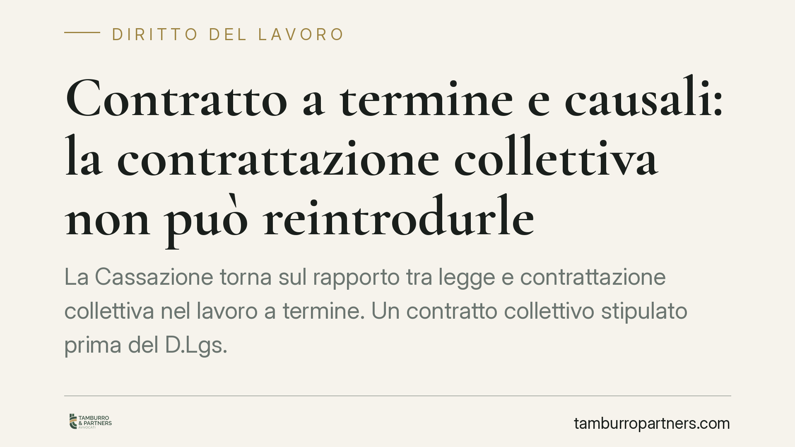

Contratto a termine e causali: la contrattazione collettiva non può reintrodurle
La Cassazione torna sul rapporto tra legge e contrattazione collettiva nel lavoro a termine. Un contratto collettivo stipulato prima del D.Lgs. 81/2015 non può imporre una causale giustificativa a contratti che la legge ha reso acausali. La pronuncia rafforza la gerarchia delle fonti e incide sulla validità di clausole ancora oggi presenti in molti CCNL di settore, come quello della logistica.

Il caso
Un lavoratore contestava l'apposizione del termine al proprio contratto, invocando una clausola del CCNL Logistica, Trasporto merci e Spedizioni che richiedeva l'indicazione di una causale, ossia della ragione specifica (tecnica, organizzativa, produttiva o sostitutiva) posta a fondamento dell'assunzione a tempo determinato.
Il nodo era semplice ma di sistema: un contratto collettivo firmato prima dell'entrata in vigore del D.Lgs. 81/2015 può obbligare le parti a indicare una causale che la legge, nel frattempo, ha eliminato? La Cassazione ha risposto in modo netto, escludendo tale possibilità.
Inquadramento normativo
Il D.Lgs. 81/2015 ha riscritto la disciplina del contratto a tempo determinato. Nella sua formulazione iniziale, per i contratti di durata non superiore a determinati limiti, l'apposizione del termine non richiedeva l'indicazione di alcuna causale: il contratto era, appunto, "acausale". La causale è tornata rilevante solo in seguito, con il Decreto Dignità (D.L. 87/2018) e con le successive modifiche, ma per fattispecie e periodi differenti.
Il punto affrontato dalla Corte riguarda la fase acausale. Una clausola di un CCNL anteriore al 2015, concepita in un contesto normativo che ancora imponeva la causale, non può sopravvivere alla riforma trasformandosi in un obbligo autonomo. La contrattazione collettiva opera negli spazi che la legge le riconosce: dove il legislatore ha scelto di non richiedere la causale, il contratto collettivo preesistente non può reintrodurla come requisito di validità.
Si conferma così un principio consolidato sulla gerarchia delle fonti: la legge prevale, e la contrattazione collettiva può integrarla o derogarla solo nei limiti e nelle direzioni espressamente ammessi. Un rinvio alla causale contenuto in un accordo stipulato sotto una disciplina abrogata non produce l'effetto di rendere nullo il termine privo di causale.
Implicazioni pratiche
Per i datori di lavoro, la decisione riduce il rischio di contenzioso legato a clausole "dormienti" dei CCNL. Un contratto a termine acausale, stipulato nella vigenza della versione originaria del D.Lgs. 81/2015, non è impugnabile solo perché privo della causale richiesta da un accordo collettivo anteriore alla riforma.
Per i lavoratori, il messaggio è di segno opposto: la contestazione fondata esclusivamente sulla clausola del CCNL preesistente è destinata, secondo questo orientamento, a non trovare accoglimento. Restano invece pienamente azionabili le violazioni della disciplina legale effettivamente vigente al momento della stipula, come il superamento dei limiti di durata, il mancato rispetto degli intervalli tra un contratto e l'altro o l'assenza della causale quando questa è imposta dalla legge (e non dal solo contratto collettivo).
La distinzione cruciale è temporale: occorre individuare quale versione della normativa disciplinava il singolo contratto. Un rapporto sorto dopo il Decreto Dignità segue regole diverse rispetto a uno stipulato nel primo periodo di applicazione del D.Lgs. 81/2015.
Cosa fare in concreto
- Verificate la data di stipula di ciascun contratto a termine e individuate la disciplina legale in vigore in quel momento: è il primo criterio per stabilire se la causale fosse dovuta.
- Controllate il CCNL applicabile, distinguendo le clausole sulla causale anteriori al 2015 da quelle successive: le prime, alla luce di questo orientamento, non fondano da sole la nullità del termine.
- Non basate un'eventuale impugnazione sulla sola clausola collettiva preesistente: valutate anche i profili di durata, reiterazione e rispetto degli intervalli previsti dalla legge.
- Datori di lavoro: aggiornate la modulistica delle assunzioni a termine, allineandola alla normativa vigente ed eliminando rinvii a clausole ormai superate.
- Documentate le ragioni dell'assunzione anche quando non richieste: una tracciabilità coerente riduce il rischio nei rapporti soggetti, per periodo, all'obbligo di causale.
La pronuncia non chiude ogni margine di contenzioso, ma riporta l'attenzione sul dato essenziale: nel lavoro a termine, prima di ogni valutazione, conta stabilire quale legge governava il singolo contratto.
---
*Contributo informativo a cura di Tamburro & Partners - Avv. Giuseppe Tamburro. Non costituisce parere legale.*
Ogni storia di lavoro ha i suoi tempi.
Se gestisci HR e vuoi un confronto su contenzioso, ispezioni o licenziamenti, scrivi allo studio. Ti rispondiamo entro un giorno lavorativo.